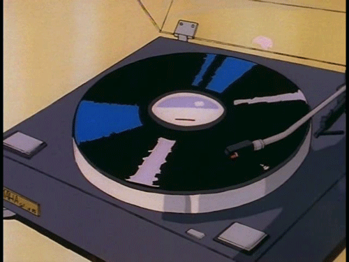

City Pop 소개

개요
통상적으로 시티팝이라고 한다면 일본의 70~80년대
서구 팝 음악의 영향을 받은 도시적이고 미래지향적인 음악이다.
등장 당시의 사회적 기조에 걸맞게 전반적으로 낭만적이고 낙관적인 분위기가 짙다.
시티팝은 장르라기보단 스타일에 가깝다. 팝,스무드 재즈, 펑크, 소울 등 다양한 장르의 음악이 시티팝의 범주에 들어간다.
1980년대 일본 버블 시대를 대표하는 음악인만큼 막강한 자본력으로 최고급의 스튜디오 장비를
갖추는 것뿐 아니라 외국 유명 아티스트를 일본에 초대해 함께 작업하는 경우도 많았다.
이는 2010년대 들어 특유의 세련된 분위기로 다시 소환되기 시작하였다.
최근 몇 년 새 대중문화계에는 하나의 공통된 경향이 목격되고 있다.
과거로의 회귀다. 과거란 늘 당대의 주류 문화 한켠에 묻어 있는 흔적 같은 것이었지만,
2021년의 과거는 그 자체가 메인 스트림으로 자리잡은 모양새다.
말하자면 언제나 존재하던 ‘복고’ 문화를 소비하는 방식이 바뀌었다.
대중문화 주 소비층인 20~30대는 태어나지도 않았을 시절의 생소한 음악과 패션들을 찾아 나선다.
혹은 아주 어릴적 TV와 라디오에서 접했던 희미한 기억들을 불러낸다.
이런 상황에서 ‘뉴트로’라는 신조어가 심심찮게 들린다.
‘새롭다(New)’와 ‘복고(Retro)’를 합친 말이다.
과거의 것을 꺼내오되 지금의 색을 입히는 재해석 작업이 기본적으로 수반된다.
더 이상 하늘 아래 새로운 것은 없는 시대를 사는 대중은, 이 ‘오래된 낯섦’을 매우 새롭게 소비한다.